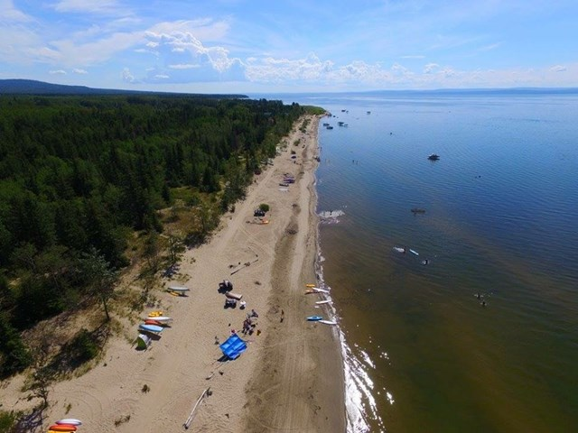

High Prairie is a small town in northern Alberta. There is one K-12 and one set of elementary, junior high, and high schools here. The summers are either really warm or very rainy and cold. While on the flipside the winter is cold and windy, the town puts up Christmas lights in the winter to brighten up the community. In the summer they put up flowers along main street to add extra beauty to the streets. The town’s population consists of many cultures including: Metis, First nations, Filipino, European, Ukrainian. High Prairie has multiple lakes in close proximity this including Hilliard’s Bay and Winagami. Some people love to connect with one another in the grocery store as it brings the entire community together. The culture around town ranges from the municipal library to the Gordon Buchanan Centre which includes dance, theatre, and hockey.